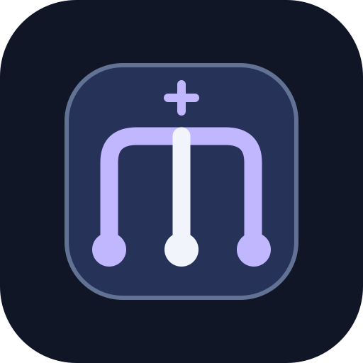
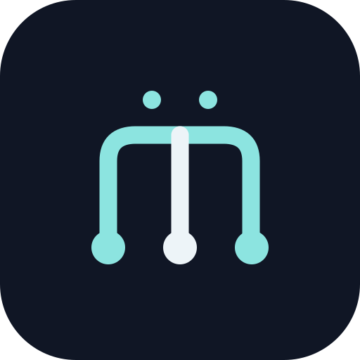
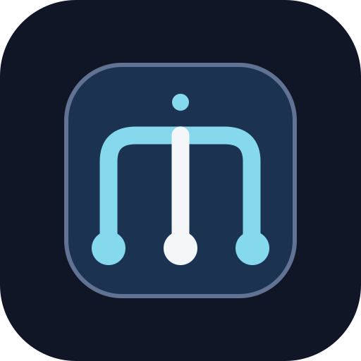

01
선 없이
상단 장식을 덜어 형태만 남김
38 / 22px
상단 가로선은 원안의 장식이 뒤집혀 올라온 것입니다. 01은 제거, 나머지는 작은 점·고리·호 등으로 바꿨습니다.
상단 장식을 덜어 형태만 남김
기록의 한 점을 상단에 둠
몸·식단·운동의 세 기록을 암시
위쪽에 작은 호만 추가
원래 가로선에 숨 쉴 틈을 줌
기록이 모이는 중심을 표시

기록 완료의 작은 반응

좌우 균형을 가장 단순하게 표현

장식을 프레임 안으로 묶음
가로선 대신 위쪽을 세 줄기로 열어 둠